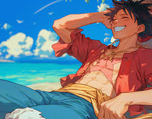
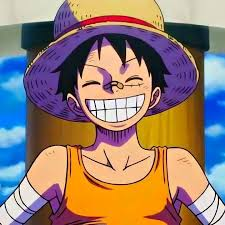
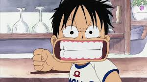
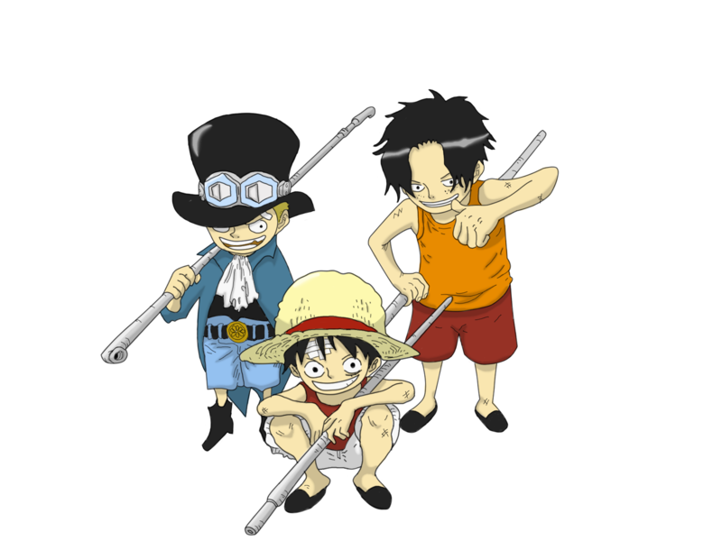
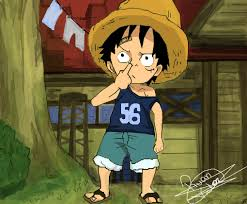
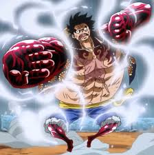
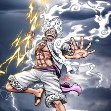
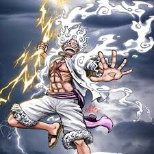

Monkey D. Luffy
Ele é o capitão dos Piratas do Chapéu de Palha, uma tripulação formada por indivíduos únicos e talentosos que compartilham o objetivo de realizar seus sonhos. Luffy é reconhecido por sua personalidade alegre, determinada e por seu senso de justiça inabalável.
Monkey D. Luffy é um símbolo de liberdade, amizade e perseverança. Sua jornada inspira milhões de fãs ao redor do mundo, mostrando que com determinação e companheirismo, qualquer sonho é possível.
 Origem
Luffy nasceu na Vila Foosha, no East Blue, e desde pequeno demonstrava um espírito aventureiro, inspirado por seu ídolo Shanks, o Ruivo, um pirata que frequentava sua vila. Após acidentalmente comer a Gomu Gomu no Mi, uma fruta do diabo, Luffy ganhou a habilidade de esticar seu corpo como borracha, mas perdeu a capacidade de nadar. Seu sonho é se tornar o Rei dos Piratas, alcançando o lendário tesouro conhecido como One Piece, deixado pelo antigo Rei dos Piratas, Gol D. Roger.
  Habilidades
A principal habilidade de Luffy vem de sua fruta do diabo, que transforma seu corpo em borracha, tornando-o resistente a impactos e ataques físicos. Ao longo da história, ele desenvolve técnicas avançadas como o Gear Second, Gear Third, Gear Forth e o Gear Fifth, que aumentam sua força, velocidade e criatividade em combate. Além disso, ele domina o uso do Haki, uma energia espiritual que permite enfrentar adversários extremamente poderosos, como os Almirantes da Marinha e os Yonkou.
 
